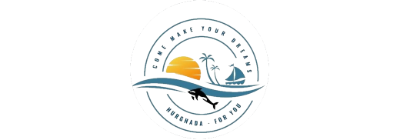
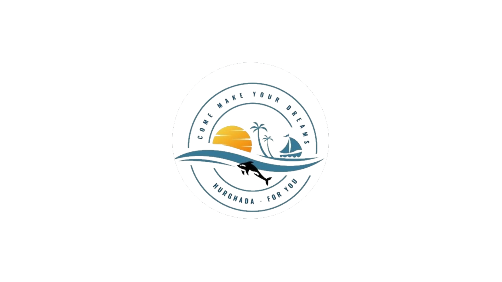

تم توليد وحفظ جميع الصور في هذا الفولدر بأسمائها القياسية الجاهزة للتركيب في فولدر public/ مباشرة


انسخ جميع الصور الموجودة في هذا الفولدر مع ملف manifest.json وضعها داخل مجلد public/ في مشروعك.
<link rel="icon" type="image/png" sizes="32x32" href="/favicon-32x32.png" />
<link rel="icon" type="image/png" sizes="16x16" href="/favicon-16x16.png" />
<link rel="icon" type="image/png" sizes="48x48" href="/favicon-48x48.png" />
<link rel="apple-touch-icon" sizes="180x180" href="/apple-touch-icon.png" />
<link rel="manifest" href="/manifest.json" />
<meta name="theme-color" content="#0a2540" />
<meta property="og:image" content="/og-image.png" />
<script>
window.__deferredPwaPrompt = null;
window.addEventListener('beforeinstallprompt', function (e) {
e.preventDefault();
window.__deferredPwaPrompt = e;
window.dispatchEvent(new Event('ax-pwa-ready'));
});
</script>
/* في ملف index.css لعمل خلفية مائية للموقع */
body {
background-image: url('/site-bg-watermark.png');
background-repeat: no-repeat;
background-position: center center;
background-attachment: fixed;
background-size: cover;
}
/* في الهيدر أو الـ Sidebar */
<img src="/logo-header.png" alt="Logo" className="h-10 w-auto object-contain" />